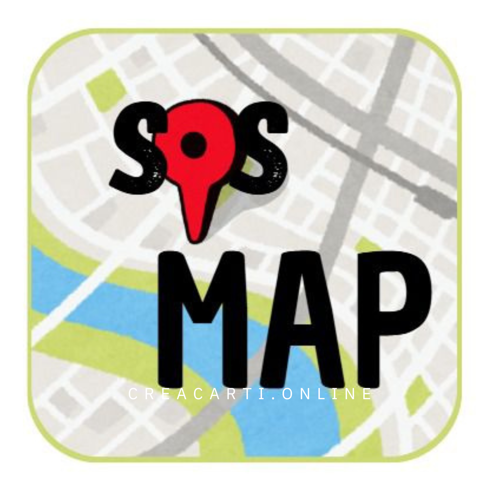

At creacarti, we believe technology is meaningless unless it improves people's lives. We are dedicated to transforming ideas into mobile tools that empower, protect, and connect communities.
Active Projects

SAFETY
SOSMAP
An application built for safety featuring a real-time assistance map.